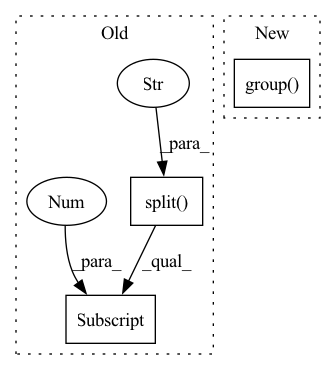

Pattern ID :422
Before Change
aws_id_arg = "--account-id"
// NOTE: We are relying on tag structure to get TF major version. If tagging changes, this will break.
tf_major_version = tag.split("-")[-1] .split(".")[0]
path = os.path.join(os.path.dirname(path), f"{framework}{tf_major_version}_training")
else:
aws_id_arg = "--registry"After Change
aws_id_arg = "--account-id"
// NOTE: We are relying on tag structure to get TF major version. If tagging changes, this will break.
tf_major_version = re.search(r"\d\.(\.|\d)+", tag).group() [0]
path = os.path.join(os.path.dirname(path), f"{framework}{tf_major_version}_training")
else:
aws_id_arg = "--registry"In pattern: SUPERPATTERN
Frequency: 3
Non-data size: 3
Instances Fragment ID: 2366560
Project Name: aws/deep-learning-containers
Commit Name: 603e1f0450baa6c3d684ee22650095562c64283a
Time: 2020-05-05
Author: satishgollaprolu@gmail.com
File Name: test/testrunner.py
M Class Name: AnonimousClass
N Class Name: AnonimousClass
M Method Name: generate_sagemaker_pytest_cmd(1)
N Method Name: generate_sagemaker_pytest_cmd(1)
M Parent Class:
N Parent Class:
M File Name: test/testrunner.py
N File Name: test/testrunner.py
M Start Line: 63
M End Line: 63
N Start Line: 64
N End Line: 64
Before Change
with WarpedVRT(src, crs=self.crs) as vrt:
minx, miny, maxx, maxy = vrt.bounds
// https://www.nrcs.usda.gov/Internet/FSE_DOCUMENTS/nrcs141p2_015644.pdf
date = filename.split("_")[-1] .replace(".tif", "")
time = datetime.strptime(date, "%Y%m%d")
timestamp = time.timestamp()
coords = (minx, maxx, miny, maxy, timestamp, timestamp)After Change
with rasterio.open(filename) as src:
with WarpedVRT(src, crs=self.crs) as vrt:
minx, miny, maxx, maxy = vrt.bounds
date = match.group( "acquisition_date")
time = datetime.strptime(date, self.date_format)
timestamp = time.timestamp()
coords = (minx, maxx, miny, maxy, timestamp, timestamp)
self.index.insert(i, coords, filename) Fragment ID: 2366562
Project Name: microsoft/torchgeo
Commit Name: a207f0ee5a748c6744b66ea9555ce3428e5f16b2
Time: 2021-08-02
Author: ajstewart426@gmail.com
File Name: torchgeo/datasets/naip.py
M Class Name: NAIP
N Class Name: NAIP
M Method Name: __init__(4)
N Method Name: __init__(4)
M Parent Class: GeoDataset
N Parent Class: GeoDataset
M File Name: torchgeo/datasets/naip.py
N File Name: torchgeo/datasets/naip.py
M Start Line: 66
M End Line: 75
N Start Line: 83
N End Line: 96
Before Change
policy_path = policy_paths[idx]
policy_name = ntpath.basename(policy_path)
// Get nupdate info from policy_name, typically "policy_00050000_batches.pt"
n_update = policy_name.split("_")[1]
logging.info(f"Start testing policy [{count + 1}/{len(policy_idxes)}] {policy_path}")
eval_file_name = f"eval_{n_update}_batches.json"
After Change
// Get nupdate info from policy_name, typically "policy_00050000_batches.pt"
policy_name_match = re.match(r"policy_(?P<n_update>\d+)_batches.pt",
policy_name)
n_update = policy_name_match.group( "n_update")
logging.info(f"Start testing policy [{count + 1}/{len(policy_idxes)}] {policy_path}")
eval_file_name = f"eval_{n_update}_batches.json"
Fragment ID: 2366559
Project Name: humancompatibleai/eirli
Commit Name: 64e2822b108654f05c9aa4472d093974bce79ef9
Time: 2021-06-27
Author: cyn0531@hku.hk
File Name: src/il_representations/scripts/il_test.py
M Class Name: AnonimousClass
N Class Name: AnonimousClass
M Method Name: run(12)
N Method Name: run(12)
M Parent Class:
N Parent Class:
M File Name: src/il_representations/scripts/il_test.py
N File Name: src/il_representations/scripts/il_test.py
M Start Line: 92
M End Line: 94
N Start Line: 96
N End Line: 114